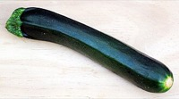

ズッキーニの生産量
いちばん多くとれる都道府県
ズッキーニが日本でいちばん多くとれるのは長野県です。3,230 tで、全国（1万800 t）の30%を占めます。

| 順位 | 都道府県 | 収穫量 | 全国に占める割合 |
|---|---|---|---|
| 1位 | 長野県 | 3,230 t | 30% |
| 2位 | 宮崎県 | 2,620 t | 24% |
| 3位 | 群馬県 | 1,490 t | 14% |
この数字について
- 分類：ウリ科
- 全国の収穫量：1万800 t
- この数字が表すもの：収穫量（畑や田でとれた重さ）
- 調査：地域特産野菜生産状況調査 令和4年産
- 42県分を調査（調査していない県は順位に入りません）